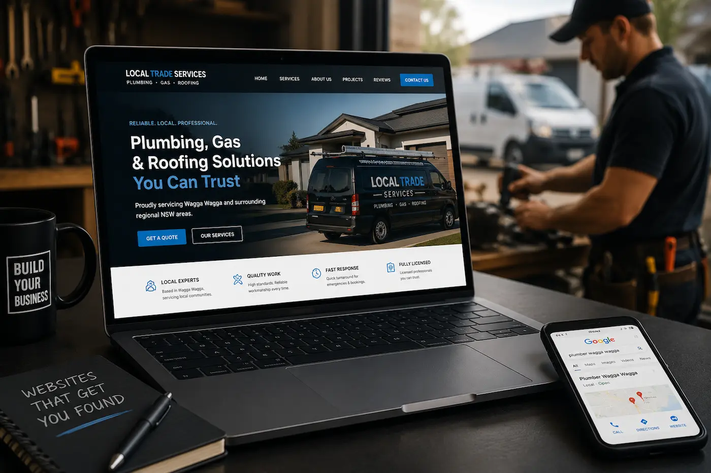
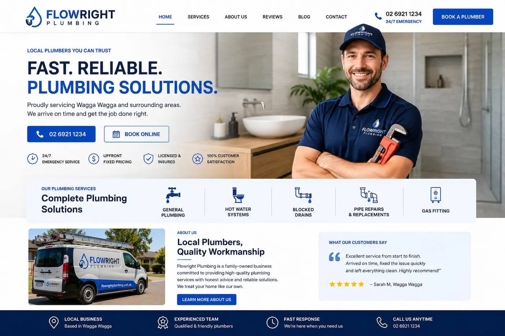
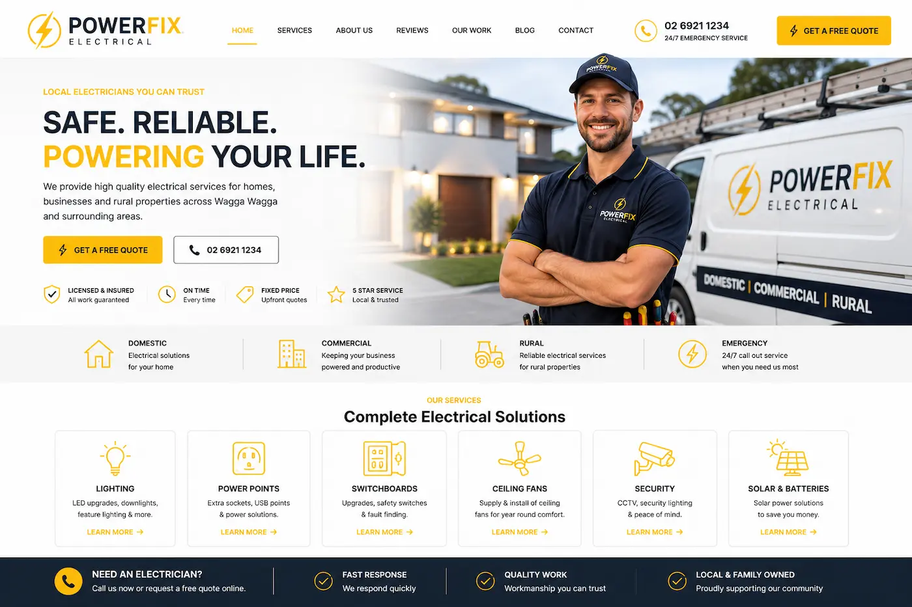
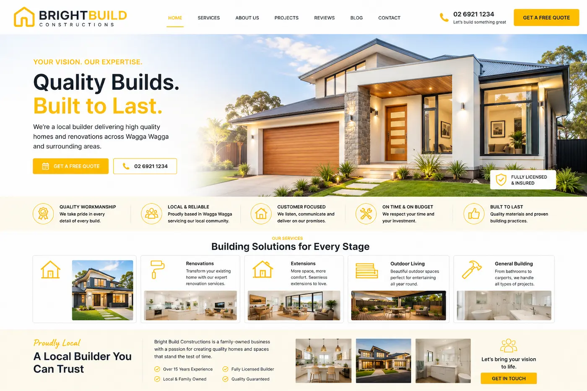
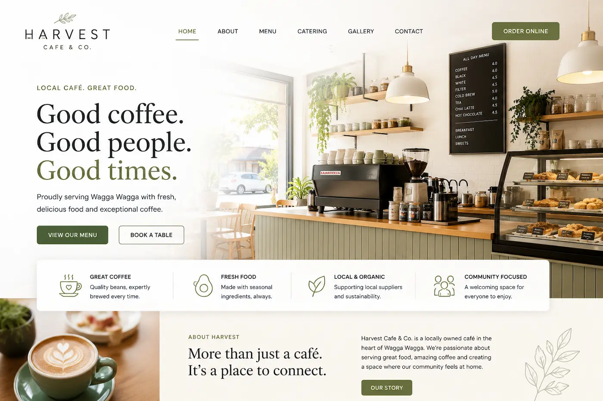
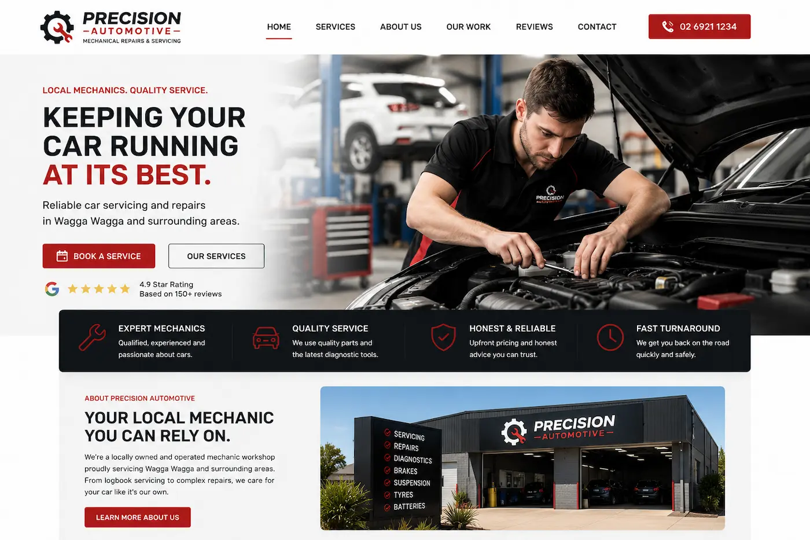
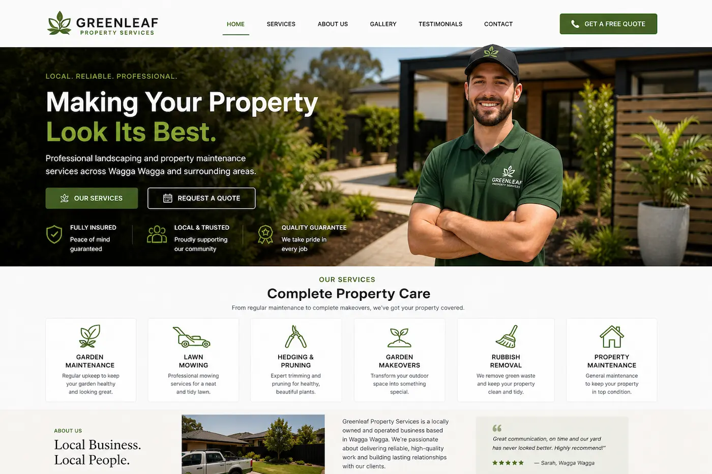
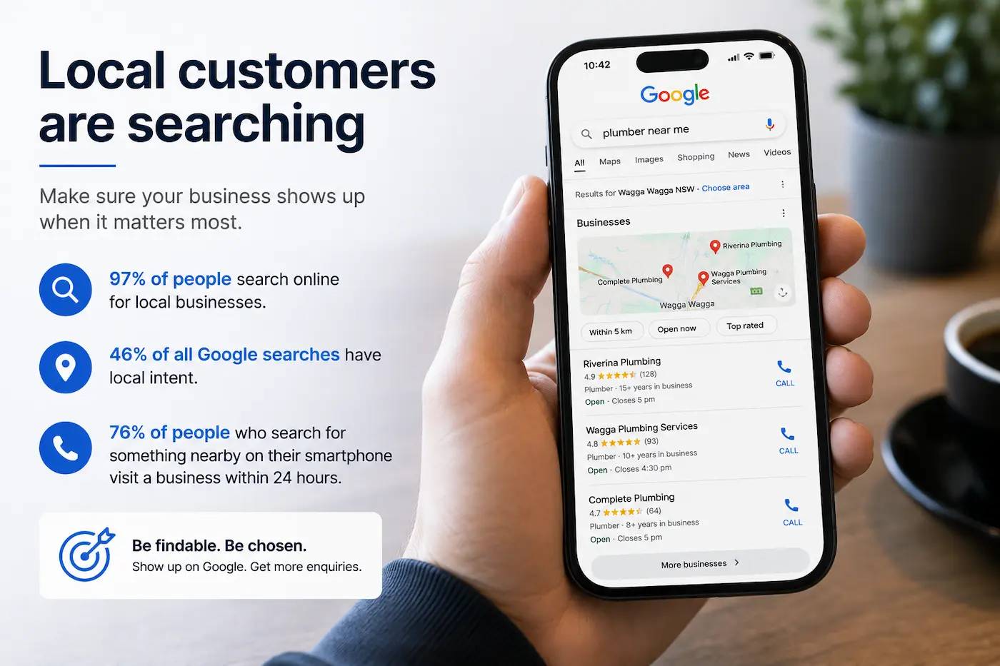
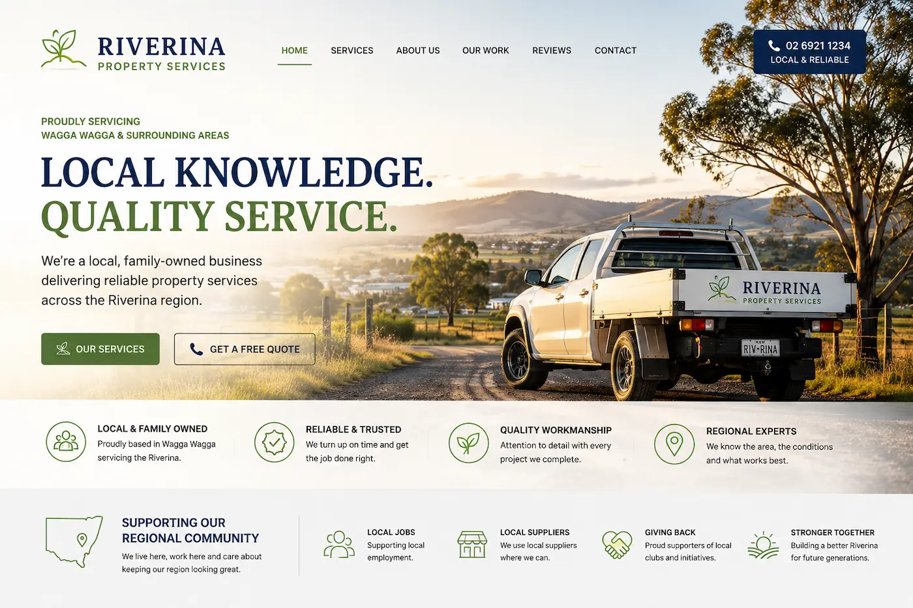
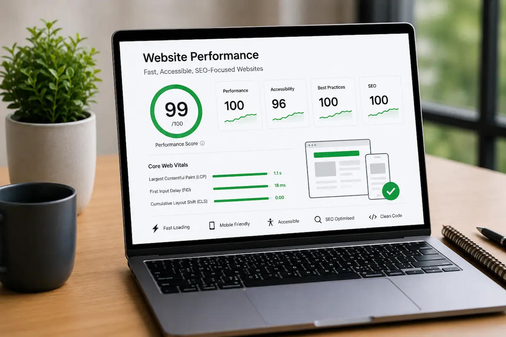

WEBSITE DESIGN FOR TRADIES & LOCAL BUSINESSES
Website Design for Businesses in Wagga Wagga, Albury & Regional NSW
Crane Platform Labs builds fast, mobile-friendly and SEO-focused websites for tradies, cafes, builders, electricians, plumbers and local service businesses across regional NSW.
Helping businesses across Wagga Wagga, Albury, Griffith, Junee and Cootamundra improve their Google visibility, build trust online and generate more enquiries from local customers.

WHO WE WORK WITH
Website Design for Regional NSW Industries
Different industries need different types of websites. A plumber, cafe, builder or electrician all have different customers, different competition and different Google search behaviour.
Crane Platform Labs builds fast, mobile-friendly and SEO-focused websites for businesses across Wagga Wagga, Albury, Griffith, Junee and Cootamundra — designed to help local businesses get found online and generate more enquiries.

Plumber Websites
Professional plumber websites designed to help plumbing businesses across Wagga Wagga, Albury and regional NSW appear on Google and generate more local enquiries.

Electrician Websites
Fast-loading websites for electricians built for mobile users searching for local electrical services across Wagga Wagga, Albury and surrounding areas.

Builder Websites
Modern builder websites designed to showcase projects, services and trust for builders and contractors across Griffith, Wagga Wagga and regional NSW.

Cafe Websites
Cafe and hospitality websites built to help customers quickly find menus, trading hours, locations and contact information on mobile devices.

Mechanic Websites
Websites for mechanics and automotive workshops focused on local SEO, trust-building and helping businesses stand out on Google.

Local Service Businesses
We also work with landscapers, salons, consultants, cleaners and small businesses across Junee, Cootamundra and regional NSW communities.

BUILT FOR LOCAL GOOGLE SEARCHES
Websites Designed for How Regional NSW Customers Search
Most local business enquiries now come from Google searches on mobile phones. Whether someone needs a plumber in Wagga Wagga, an electrician in Albury, a builder in Griffith or a cafe in Junee, customers usually choose a business within seconds.
Your website needs to load fast, look professional and clearly explain what your business does immediately. If your website is outdated, slow or difficult to use on mobile, potential customers will often leave and contact a competitor instead.
We build websites specifically for local search behaviour across Wagga Wagga, Albury, Griffith, Junee and Cootamundra — helping businesses improve their visibility on Google, build trust online and generate more enquiries from local customers.
From tradies and builders to cafes, mechanics and local service businesses, our websites are designed to support businesses operating throughout regional NSW communities.
WHAT YOU GET
Professional Websites Built for Regional NSW Businesses
We build fast, mobile-friendly and SEO-focused websites designed to help businesses across Wagga Wagga, Albury, Griffith, Junee and Cootamundra stand out online and generate more enquiries.
Built for Google
SEO-focused website structure designed to help tradies, cafes, builders and local businesses improve their visibility on Google search and Google Maps across regional NSW.
Mobile-Friendly Design
Optimised for mobile users searching for local businesses in Wagga Wagga, Albury, Griffith and surrounding regional areas.
Fast Website Performance
Fast-loading websites that improve user experience, reduce lost enquiries and support stronger Google rankings.
Clear Enquiry Focus
Simple layouts and strong call-to-actions designed to help customers quickly call, message or enquire about your services.
Professional Online Presence
Modern website design that helps local businesses across regional NSW build trust and stand out against competitors online.
Regional NSW Focused
Built specifically for businesses operating across Wagga Wagga, Albury, Griffith, Junee, Cootamundra and surrounding NSW communities.
Whether you're a plumber, electrician, builder, mechanic, cafe owner or local service business, your website needs to clearly explain your services, load quickly on mobile devices and help customers find your business on Google.
Crane Platform Labs creates websites for regional NSW businesses that combine professional design, strong local SEO foundations and fast performance to help businesses generate more enquiries online.
REGIONAL NSW WEBSITE DESIGN
Affordable, No-Fuss Websites for Regional NSW Businesses
Crane Platform Labs works with local businesses across Wagga Wagga, Albury, Griffith, Junee and Cootamundra, building professional websites designed to help businesses get found on Google and generate more local enquiries.
We understand that most small businesses do not want overly complicated websites or expensive agency pricing. Local businesses need websites that are fast, professional, easy to manage and focused on bringing in customers.
Our websites are designed specifically for regional NSW businesses, combining clean modern design, mobile-friendly performance and strong local SEO foundations to help businesses stand out online.
Whether you're a tradie in Wagga Wagga, a builder in Albury, a cafe in Griffith or a local service business in Junee or Cootamundra, we create affordable websites built around how regional customers search online.

FAQ
Frequently Asked Questions About Website Design in Regional NSW
Answers to common questions from tradies, cafes, builders and local businesses across Wagga Wagga, Albury, Griffith, Junee and Cootamundra.
Do tradies really need a professional website?
Yes. Most customers now search online before calling a plumber, electrician, builder or local service business. A professional website helps tradies across Wagga Wagga, Albury and regional NSW appear more trustworthy and easier to find on Google.
Can a website help my business rank on Google?
A properly structured website with strong local SEO foundations can help businesses improve visibility in Google search results and Google Maps. Fast-loading, mobile-friendly websites also improve user experience and help generate more enquiries.
Do you build affordable websites for small businesses?
Yes. We focus on affordable, no-fuss websites for small businesses across regional NSW. Our goal is to provide professional websites without unnecessary complexity or expensive agency pricing.
What types of businesses do you work with?
We work with plumbers, electricians, builders, mechanics, cafes, landscapers, salons and other local service businesses throughout Wagga Wagga, Albury, Griffith, Junee and Cootamundra.
Are your websites mobile-friendly?
Yes. Every website we build is designed for mobile devices, helping customers quickly find services, contact information and locations while searching on their phones.
How much does a small business website cost in NSW?
Website pricing depends on the size and requirements of the project, but we focus on affordable website design for regional NSW businesses looking for professional results and strong Google visibility.
Do you only work with businesses in Wagga Wagga?
No. We work with businesses across Albury, Griffith, Junee, Cootamundra and surrounding regional NSW communities.
Can you redesign my existing website?
Yes. We can redesign outdated websites to improve speed, mobile usability, SEO performance and overall professionalism while helping businesses generate more enquiries online.
WEBSITE PERFORMANCE
Built For Performance, Accessibility & SEO
Crane Platform Labs builds fast, mobile-friendly and SEO-focused websites designed to improve Google visibility, accessibility, usability and customer trust across regional NSW.
Modern websites should not only look professional but also perform properly across Google Search, mobile devices and modern accessibility standards.
Our websites are built using clean semantic HTML, responsive layouts, lightweight code and SEO-friendly structure designed to support fast loading performance, mobile usability and long-term online visibility.
From tourism websites and local business websites to tradie and regional NSW service websites, we focus on balancing modern design with accessibility, usability, SEO and modern web best practices.
Learn why website performance, accessibility, mobile usability and SEO now play a major role in Google rankings, customer experience and long-term business growth online.

READY TO GROW YOUR BUSINESS?
Affordable Website Design for Businesses Across Regional NSW
Crane Platform Labs builds fast, mobile-friendly and SEO-focused websites for tradies, cafes, builders, electricians, plumbers and local businesses across Wagga Wagga, Albury, Griffith, Junee and Cootamundra.
Whether you need a new website or want to improve an existing one, we create affordable, no-fuss websites designed to help businesses rank on Google, build trust online and generate more local enquiries.